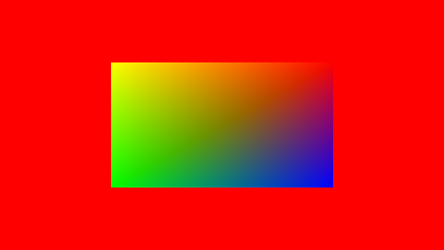

Ch7-2 初识索引缓冲区
本节的main.cpp对应示例代码中的：Ch7-2.hpp
这一节使用顶点缓冲区和索引缓冲区来绘制长方形。
使用顶点和索引缓冲区绘制长方形的流程
在之前Ch7-1.hpp用顶点缓冲区绘制三角形代码的基础上，使用顶点和索引缓冲区绘制长方形需要经历以下步骤：
1.创建顶点缓冲区
2.创建索引缓冲区
3.在命令缓冲区中绑定顶点缓冲区并绘制
创建顶点缓冲区和索引缓冲区
绘制一个长方形需要几个顶点？当然4个！
vertex vertices[] = { { { -.5f, -.5f }, { 1, 1, 0, 1 } }, { { .5f, -.5f }, { 1, 0, 0, 1 } }, { { -.5f, .5f }, { 0, 1, 0, 1 } }, { { .5f, .5f }, { 0, 0, 1, 1 } } }; vertexBuffer vertexBuffer(sizeof vertices); vertexBuffer.TransferData(vertices);
一个长方形由两个三角形构成，所以以VK_PRIMITIVE_TOPOLOGY_TRIANGLE_LIST为图元拓扑类型绘制时，必须要有6个顶点：
uint16_t indices[] = { 0, 1, 2, 1, 2, 3 }; indexBuffer indexBuffer(sizeof indices); indexBuffer.TransferData(indices);
-
indexBuffer是VkBase+.h中的类。
绑定顶点缓冲区和索引缓冲区
绑定顶点缓冲区：
VkDeviceSize offset = 0; vkCmdBindVertexBuffers(commandBuffer, 0, 1, vertexBuffer.Address(), &offset);
在渲染循环中，渲染通道开始后用vkCmdBindIndexBuffer(...)绑定索引缓冲区：
void VKAPI_CALL vkCmdBindIndexBuffer(...) 的参数说明 |
|
|---|---|
VkCommandBuffer commandBuffer |
命令缓冲区的handle |
VkBuffer buffer |
要被绑定的索引缓冲区的handle |
VkDeviceSize offset |
索引缓冲区中被绑定范围到索引缓冲区开头的距离，单位是字节 |
VkIndexType indexType |
索引类型，如不涉及扩展，可为VK_INDEX_TYPE_UINT16或VK_INDEX_TYPE_UINT32 |
vkCmdBindIndexBuffer(commandBuffer, indexBuffer, 0, VK_INDEX_TYPE_UINT16);
使用索引进行绘制
用vkCmdDrawIndexed(...)进行索引绘制，其效果是根据索引从顶点缓冲区中取出相应顶点数据进行绘制：
void VKAPI_CALL vkCmdDrawIndexed(...) 的参数说明 |
|
|---|---|
VkCommandBuffer commandBuffer |
命令缓冲区的handle |
uint32_t indexCount |
本次绘制所使用索引的个数 |
uint32_t instanceCount |
要绘制的实例个数 |
uint32_t firstIndex |
首个索引值在绑定的索引缓冲区中的索引 |
int32_n vertexOffset |
索引缓冲区中的索引值加上vertexOffset即为最终使用的索引的数值 |
uint32_t firstInstance |
首个实例的索引 |
vkCmdDrawIndexed(commandBuffer, 6, 1, 0, 0, 0);
简要说明vertexOffset的作用，如果顶点数据如下：
vertex vertices[] = {
{ { .0f, .0f }, { 0, 0, 0, 1 } },
{ { -.5f, -.5f }, { 1, 1, 0, 1 } },
{ { .5f, -.5f }, { 1, 0, 0, 1 } },
{ { -.5f, .5f }, { 0, 1, 0, 1 } },
{ { .5f, .5f }, { 0, 0, 1, 1 } }
};
那么用vkCmdDrawIndexed(commandBuffer, 6, 1, 0, 1, 0)绘制得到的会是相同的结果（offset为1，于是不读取vertices[0]被跳过）。
运行程序，你应该会看到以下图像：
